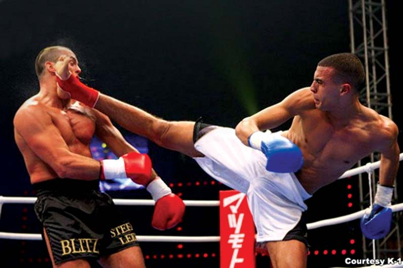
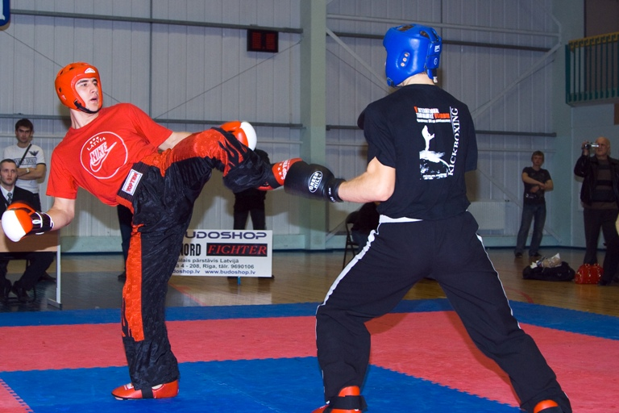

The Sport
Kickboxing is a group of stand-up combat sports based on kicking and punching, historically developed from Karate, Muay Thai, Khmer Boxing, and Western boxing. Kickboxing is practiced for self-defense, general fitness, or as a contact sport. Japanese kickboxing originated in the 1960s, with competitions held since then.[6][7] American kickboxing originated in the 1970s and was brought to prominence in September 1974, when the Professional Karate Association (PKA) held the first World Championships. Historically, kickboxing can be considered a hybrid martial art formed from the combination of elements of various traditional styles. This approach became increasingly popular since the 1970s, and since the 1990s, kickboxing has contributed to the emergence of mixed martial arts via further hybridization with ground fighting techniques from Brazilian jiu-jitsu and folk wrestling.
Full-Contact

Full contact rules, or American kickboxing, is essentially a mixture of Western boxing and traditional karate. The male kickboxers are bare-chested wearing kickboxing trousers and protective gear including: mouth-guard, hand-wraps, 10 oz (280 g). boxing gloves, groin-guard, shin-pads, and kick-boots and protective helmet (for amateurs and those under 16). The female kickboxers will wear a sports bra and chest protection in addition to the male clothing/protective gear.
Notable fighters under full contact rules include Dennis Alexio, Joe Lewis, Rick Roufus, Jean-Yves Theriault, Benny Urquidez, Bill Wallace and Don "The Dragon" Wilson.
Rules:
- Opponents are allowed to hit each other with punches and kicks, striking above the waist.
- Elbows and knees are forbidden and the use of the shins is seldom allowed.
- Clinch fighting, throws and sweeps are forbidden.
- Bouts are usually 3 to 12 rounds (lasting 2–3 minutes each) with a 1-minute rest in between rounds.
Semi-Contact

Semi-contact rules or Points Fighting, is an important variant of kickboxing, probably the most similar to the original format brought by W.A.K.O., commonly considered the largest amateur organization of kickboxing. In fact, originally the initials of W.A.K.O. meant "World All Styles Karate Organization", proving the very strong link between karate and kickboxing. Semi-contact is the variant of American kickboxing most similar to karate, since it consists in fighting for the purpose of scoring points with an emphasis on delivery, speed, and technique. Under such rules, fights are held on the tatami, presenting the belts to classify the fighters in order of experience and ability. The male kickboxers wear shirts and kickboxing trousers as well as protective gear including: mouth-guard, hand-wraps, 10 oz (280 g). boxing gloves, groin-guard, shin-pads, kick-boots, and headgear. The female kickboxers will wear a sports bra and chest protection in addition to the male clothing/protective gear.
Notable fighters under semi-contact rules include Raymond Daniels, Michael Page, and Gregorio Di Leo.
Rules:
- Fighters can score through punches or kicks, striking above the waist and foot sweeps, executed below the ankle.
- Punches, kicks, and foot sweeps are awarded 1 point. Kicks to the head or jumping kicks to the body are awarded 2 points. Jumping kicks to the head are awarded 3 points.
- Elbows, knees, and spinning backfists are forbidden.
- Clinch fighting, throws and sweeps (with the exception of foot sweeps) are forbidden.
- Bouts are usually 3 rounds (lasting 2–3 minutes each) with a 1-minute rest in between rounds.